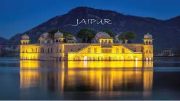
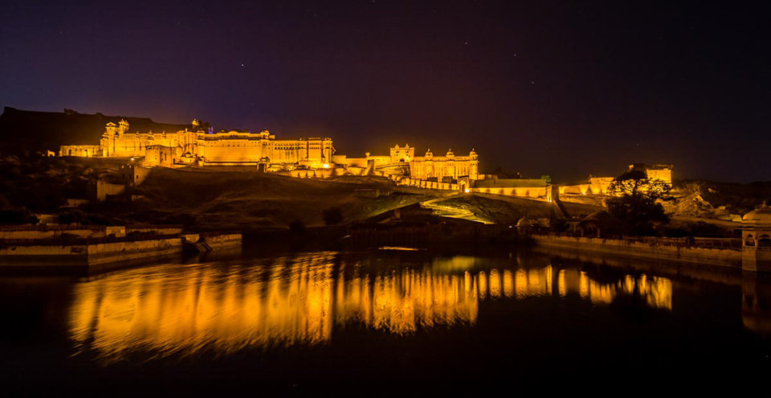
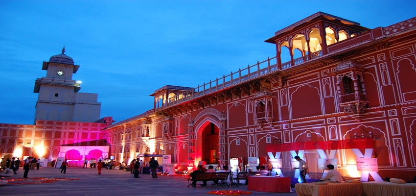
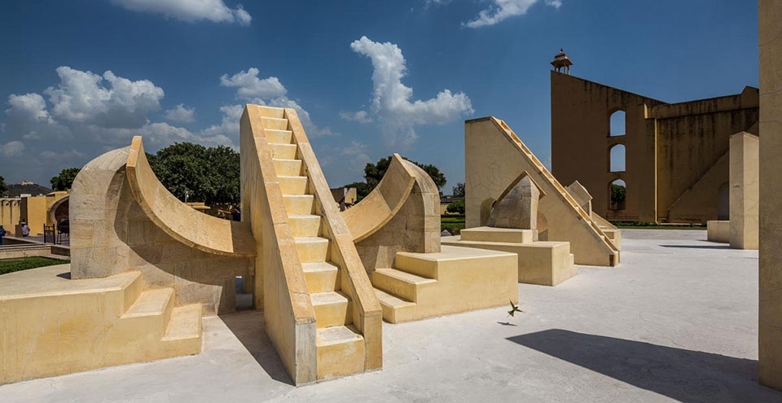
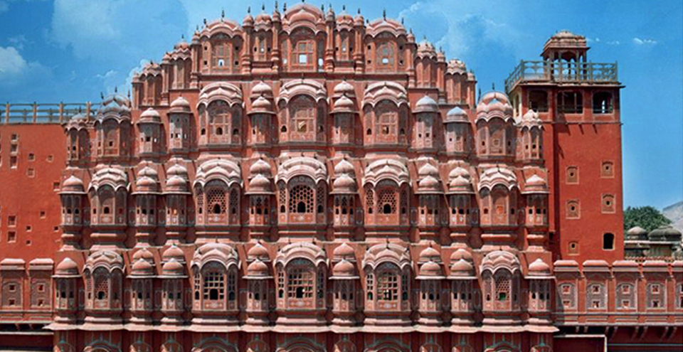
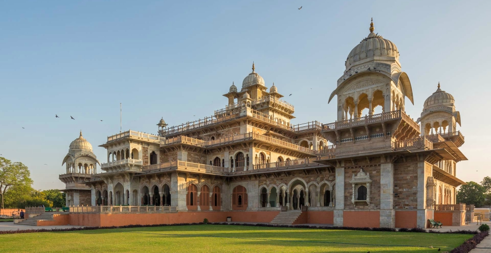
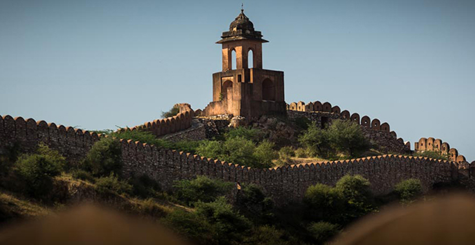
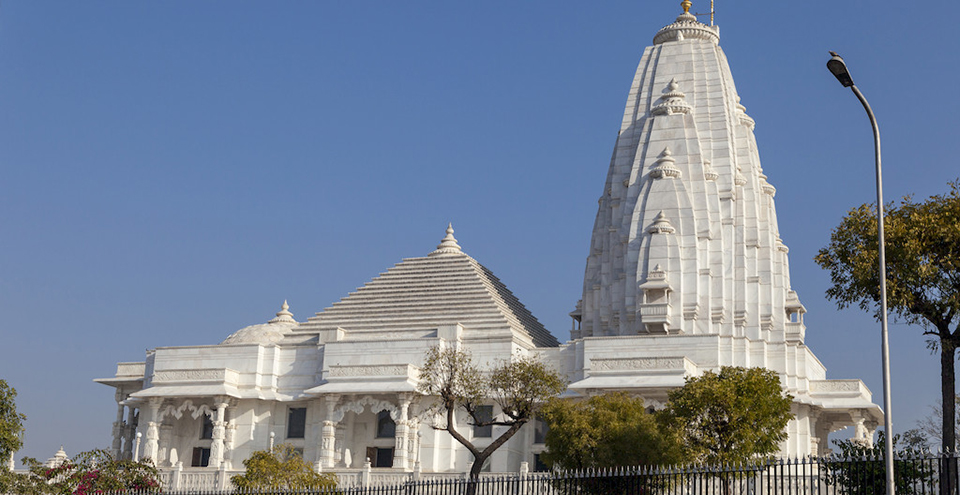

JAIPUR
THE PINK CITY
Planned by Vidyadhar Bhattacharya, Jaipur holds the distinction of being the first planned city of India. Renowned globally for its coloured gems, the capital city of Rajasthan combines the allure of its ancient history with all the advantages of a metropolis. The bustling modern city is one of the three corners of the golden triangle that includes Delhi, Agra and Jaipur.
The story goes that in 1876, the Prince of Wales visited India on a tour. Since the colour pink was symbolic of hospitality, Maharaja Ram Singh of Jaipur painted the entire city pink. The pink that colours the city makes for a marvellous spectacle to behold. Jaipur rises up majestically against the backdrop of the forts Nahargarh, Jaigarh and Moti Doongri.
Jaipur traces back its origins to 1727 when it was established by Jai Singh II, the Raja of Amber. He shifted his capital from Amber to the new city because of the rapidly-growing population and an increasing water scarcity. Noted architect Vidyadhar Bhattacharya used the established principles of Vastu Shastra to build the city.
ATTRACTIONS & PLACES TO VISIT AND EXPLORE IN JAIPUR

AMBER PALACE
Amber, located about 11 kilometres from Jaipur, sits amidst picturesque and rugged hills. It incorporates both Rajput and Mughal architecture. Constructed by Raja Man Singh I in the late 16th century and completed by Mirja Raja Jai Singh, the fort is made of red sandstone and white marble.

JAIPUR CITY PALACE
The City Palace is a splendid example of the foresight that Maharaja Sawai Jai Singh II had. As the founder of Jaipur, he took pains to create a magnificent walled city that encloses marvels such as the City Palace. The palace is a beautiful blend of Mughal and Rajput styles of architecture. The previous royal family continues to reside in one section of the palace. Located within the walls of the City Palace, Chandra Mahal is a seven-storeyed tower. However, the ground and first floors have now been given over for the Maharaja Sawai Man Singh II Museum.

JANTAR MANTAR
The Jantar Mantar in Jaipur is considered to be the largest of the five astronomical observatories built by Maharaja Sawai Jai Singh II, the founder of Jaipur. It contains fourteen geometric devices, designed to measure time, track celestial bodies and observe the orbits of the planets around the sun.

HAWA MAHAL
The Palace of Winds was constructed in 1799 by the poet-king Sawai Pratap Singh. The five-storied structure is made of pink sandstone and has 356 intricately carved jharokhas (windows). It was designed for the women of the royal family to sit in privacy while observing life on the street.

ALBERT HALL MUSEUM
The building gets its name from The Victoria and Albert Museum in London, the inspiration for its design. The exquisitely built Albert Hall is housed in the centre of Ram Niwas Garden. Sir Swinton Jacob (who is also the mastermind behind many other palaces in Rajasthan) conceptualised and designed it using styles from the Indo-Sarcenic architecture and the Prince

NAHARGARH FORT
The northern frontier of Jaipur is fortified by Nahargarh Fort. Situated on a rough crest of the Aravalli range, the fort, which literally means ‘abode of the tigers’, was built in 1734 by Jai Singh to further defend Amber. Later, in 1868, the fort was extended to its present size.

JAIGARH FORT
Of the three hilltop forts that overlook the city of Jaipur, Jaigarh is perhaps the most magnificent of them all. About 15 kilometres from Jaipur, it was built by Sawai Jai Singh II sometime in the early 18th century amidst the arid, rocky and thorn-scrub covered hills. Despite its ancient construction, it still retains most of its imposing citadel appearance. Visitors can see the world’s largest canon – Jaiban, at the fort.

LAKSHMI NARAYAN TEMPLE
The Lakshmi-Narayan Temple, also known as the Birla Temple, is a comparatively newer temple built by the Birlas (a noted industrialist family). The temple, constructed entirely of white marble, is home to the deities of Vishnu and his consort Lakshmi.